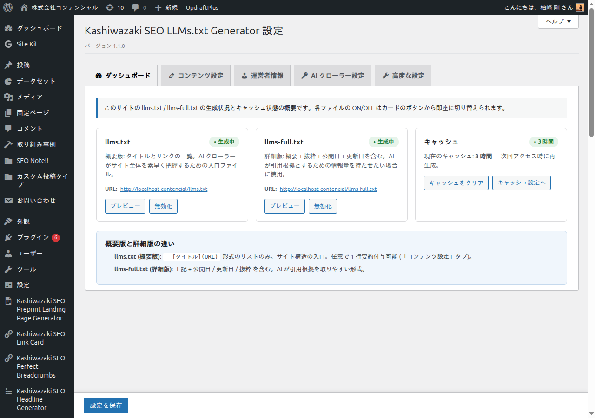
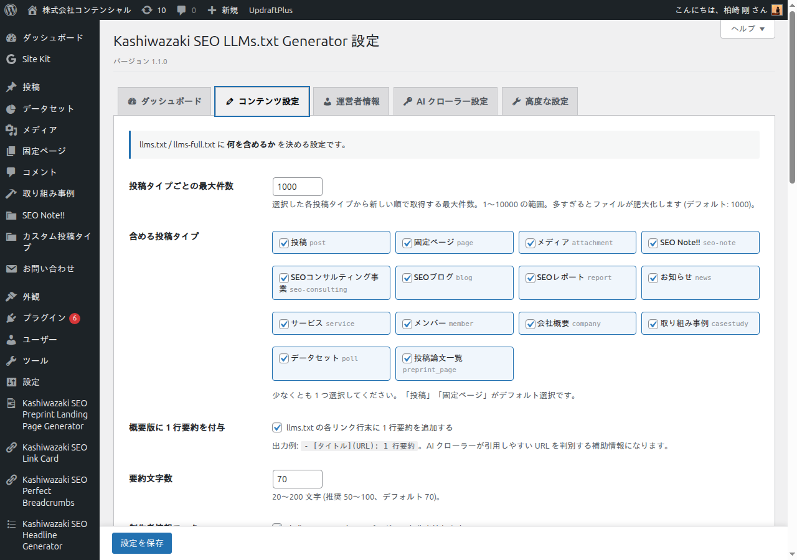
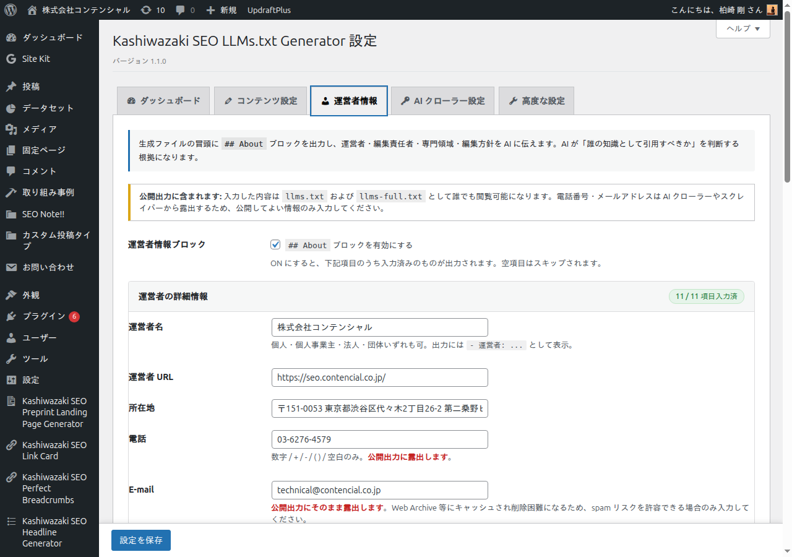
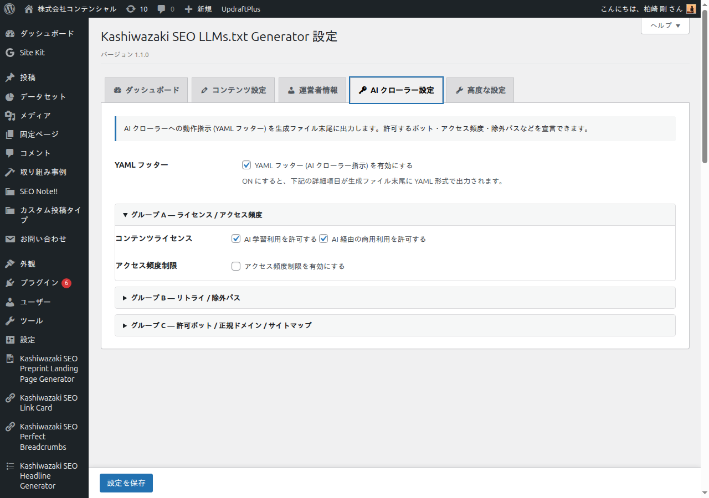
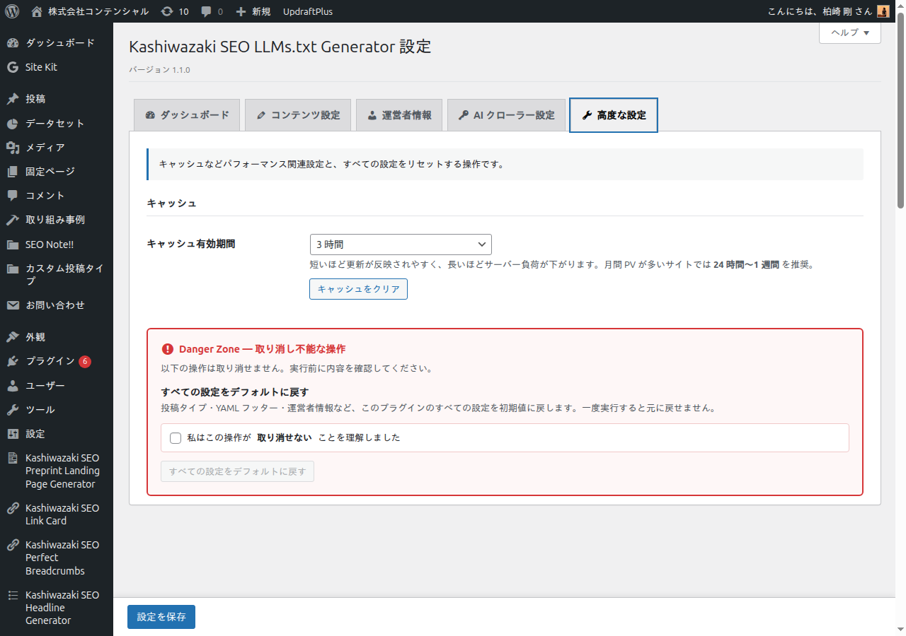

詳細設定（5 タブ構成）
v1.1.0 から管理画面は 5 つのタブに再編されました。各タブは独立した設定エリアですが、すべて 1 つの form で管理されており、どこで編集しても下部の「設定を保存」ボタン 1 回ですべて反映されます。
タブ構成の全体像
| タブ | 主な内容 |
|---|---|
| ダッシュボード | llms.txt / llms-full.txt の生成状態バッジ、キャッシュ残時間、プレビュー URL、概要版/詳細版の差説明 |
| コンテンツ設定 | llms.txt に何を含めるか（投稿タイプ、件数、概要版 1 行要約、制作者情報フッター、追加セクション） |
| 運営者情報 | E-E-A-T ブロック（運営者・編集責任者・専門領域・編集方針 等を ## About として出力） |
| AI クローラー設定 | YAML フッター（ライセンス・アクセス頻度・リトライ・除外パス・許可ボット・サイトマップ） |
| 高度な設定 | キャッシュ TTL、すべての設定をデフォルトに戻す（Danger Zone） |
1. ダッシュボードタブ
このサイトの llms.txt / llms-full.txt の生成状況を一目で確認できます。各ファイルの ON/OFF はカードのボタンから即座に切り替え可能です。

「llms.txt が動作しているか確認したい」「キャッシュをすぐクリアしたい」といった日常運用はこのタブで完結します。
2. コンテンツ設定タブ
生成ファイルに 何を含めるかを決めるタブです。投稿タイプの選択、最大件数、概要版の 1 行要約、制作者情報の有無を設定します。

投稿タイプの選択
含めたい投稿タイプにチェックを入れます。「投稿」「固定ページ」がデフォルトで選択されており、カスタム投稿タイプとメディア（attachment）も選択可能です。
v1.0.6 まではメディア（attachment）を選択しても出力されないバグがありました。v1.1.0 で post_status='inherit' も対象とするよう修正されています。
投稿タイプごとの最大件数
各投稿タイプから新しい順で取得する最大件数を指定します。1〜10000の範囲で、デフォルトは 1000 件です。多すぎるとファイルが肥大化し AI クローラーの読み込み時間に影響します。
概要版 1 行要約（任意）
有効にすると、llms.txt の各リンク行の末尾に投稿の抜粋から自動生成した 1 行要約が : 区切りで付与されます。
出力例：
- [タイトル](URL): 1 行要約
制作者情報フッター
生成ファイルの末尾にプラグイン制作者情報を表示するかどうか。デフォルトは ON です。
追加セクション（v1.1.1 新機能）
任意の Markdown を llms.txt / llms-full.txt に差し込めます。
このプラグインは投稿・固定ページの一覧を自動生成しますが、
投稿として存在しない情報は当然そこに現れません。
MCP エンドポイント、公開 API、利用条件、問い合わせ方針などがそれにあたります。
追加セクションはその穴を埋めるための欄です。
| 項目 | 内容 |
|---|---|
| 追加セクションを出力する | ON で有効。デフォルトは OFF。本文が空のときは ON でも何も出力されません。 |
| 挿入位置 | 概要の直後（コンテンツリストより前）か、 コンテンツリストの後（フッターより前）を選択。 重要な情報ほど前に置くと AI に読まれやすくなります。 |
| 本文（Markdown） |
最大 5000 文字。見出しは ## から始めると他のセクションと揃います。
HTML タグは保存時に除去されます（出力は text/plain の Markdown のため）。
|
入力した内容は誰でも閲覧できます。非公開情報は書かないでください。
記入例
## AI連携（MCP）
当サイトの公開情報は、MCP 対応 AI から直接検索・取得できます。
- エンドポイント: https://mcp.example.com/
- 認証: 不要 / 読み取り専用
- 接続: codex mcp add example --url https://mcp.example.com/フィルターフック
出力直前に加工したい場合は kashiwazaki_seo_llmstxt_custom_section を使います。
引数は $block（Markdown）、$options（設定）、$full（llms-full.txt なら true）。
3. 運営者情報タブ（E-E-A-T）
生成ファイルの冒頭に ## About ブロックを出力し、運営者・編集責任者・専門領域・編集方針などを AI に伝えます。AI が「誰の知識として引用すべきか」を判断する根拠になり、引用率の向上に効きます。

このタブで入力した内容は llms.txt および llms-full.txt として誰でも閲覧可能になります。電話番号・メールアドレスは AI クローラーやスクレイパーから露出するため、公開してよい情報のみ入力してください。
入力項目（すべて任意）
- 運営者名（個人名 / 屋号 / 法人名 / 団体名）
- 運営者 URL
- 所在地
- 電話番号 ※公開リスクあり
- E-mail ※公開リスクあり
- 編集責任者名
- 編集責任者の肩書（代表 / 編集長 / 主宰 等）
- 専門領域（改行区切り）
- 資格・認定・経歴（改行区切り）
- 編集方針ページ URL
- 編集方針サマリ（200 文字以内）
入力済の項目数は <summary> に「N / 11 項目入力済」と表示され、残り項目を一目で把握できます。
4. AI クローラー設定タブ（YAML フッター）
AI クローラーへの動作指示を YAML フッターとして生成ファイル末尾に出力します。設定項目は 3 つの details グループに分割されており、必要なグループだけ展開して編集できます。

グループ A — ライセンス / アクセス頻度
- コンテンツライセンス: AI 学習利用・商用利用の許可
- アクセス頻度制限: 秒間・分間リクエスト数の上限
グループ B — リトライ / 除外パス
- エラー時のリトライ: 最大リトライ回数 / 待機時間 / リトライしない HTTP ステータスコード
- 除外パス: AI クローラーからアクセスを除外するパス（1 行に 1 つ。
/wp-admin/等）。プリセットボタンで主要なパスを 1 クリック追加できます。
グループ C — 許可ボット / 正規ドメイン / サイトマップ
- 許可する AI ボット: GPTBot / ClaudeBot / PerplexityBot 等。プリセットボタンで主要 10 種を 1 クリック追加可能
- 正規ドメイン: AI が引用する際の正規 URL
- サイトマップ URL: XML サイトマップの場所
許可ボットと除外パスの textarea には主要な値をワンクリックで追加できるプリセットボタンが付いています。GPTBot, ChatGPT-User, OAI-SearchBot, ClaudeBot, anthropic-ai, PerplexityBot, Google-Extended, Applebot-Extended, Bytespider, CCBot などが選択可能です。
5. 高度な設定タブ
キャッシュ管理と Danger Zone（取り消し不能な操作）が配置されています。

キャッシュ有効期間
| 選択肢 | 用途 |
|---|---|
| キャッシュなし | 毎回リアルタイム生成。投稿数が少ない開発・テスト環境向け |
| 3 時間 | 更新が頻繁なメディアサイト |
| 24 時間（1 日）[推奨] | 一般的な企業・個人サイト |
| 3 日 | 更新頻度が低いサイト |
| 1 週間 [推奨] | 静的なコーポレートサイト |
| 永久（手動クリアまで） | 大規模サイトで明示的にクリアしたい場合のみ |
キャッシュをクリアボタンは TTL=0 でも常時 enabled です（過去に TTL を設定していた transient が残っている可能性があるため）。
Danger Zone — すべての設定をデフォルトに戻す
このボタンを実行すると、投稿タイプ・YAML フッター・運営者情報・キャッシュ TTL・ファイル ON/OFF など、このプラグインのすべての設定が初期値に戻ります。一度実行すると元に戻せません。
誤操作防止のため、ボタンは初期状態で無効化されており、「私はこの操作が取り消せないことを理解しました」のチェックボックスを ON にして初めて押せるようになります（v1.1.0 で導入された checkbox_understand_then_button パターン）。
共通機能
Sticky save bar
ページ下部に固定された保存バーから、どのタブからでも 1 クリックで保存できます。未保存の変更があると「⚠ 未保存の変更があります」が表示され、ページを離れようとすると beforeunload 警告が出ます。
Help タブ（管理画面右上の「ヘルプ」ボタン）
WordPress 標準の Help タブ機能を使い、概要 / 用語集 / トラブルシュート / 出力サンプル の 4 セクションを提供しています。
HTTP Conditional GET（v1.1.0 新機能、admin 不可視）
llms.txt / llms-full.txt は RFC 7232 準拠の Conditional GET (ETag / Last-Modified / 304 Not Modified) に対応しています。AI クローラーがリクエストするたびに完全なコンテンツを再取得する代わりに、変更がなければ 304 を返すため帯域を大幅に削減できます。